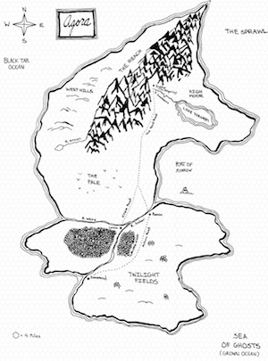
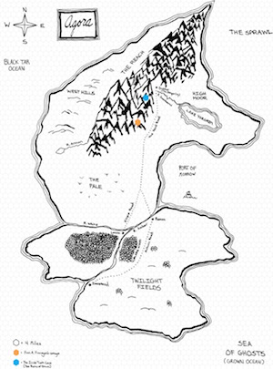
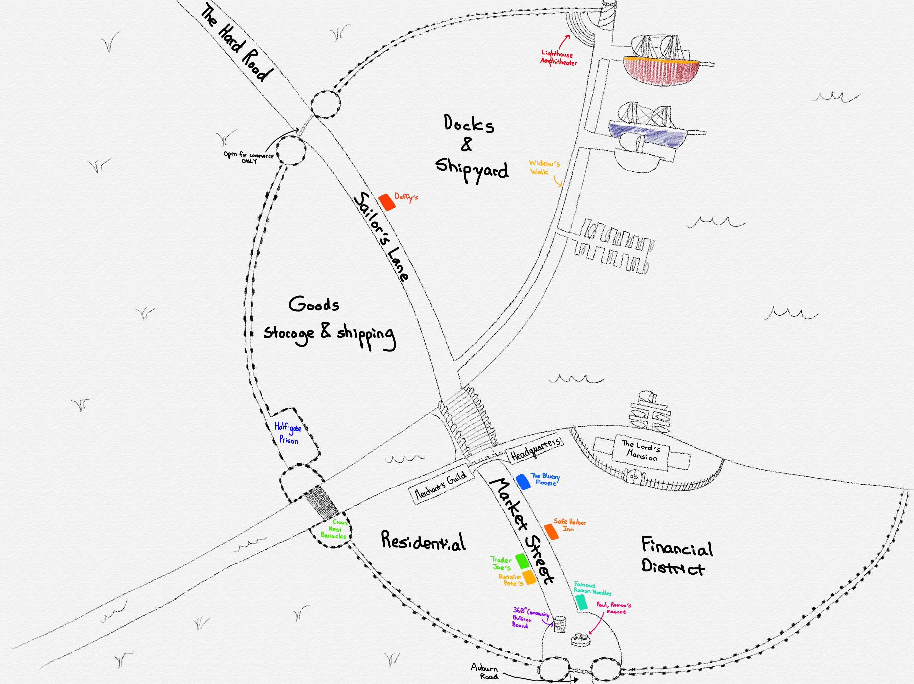

<h1><a id="home-link" href="/divers">&#8592;</a>Owned Maps</h1>

<ul class="compact-list">
<li><a href="#agora">Agora</a></li>
<li><a href="#ramon">Ramon</a></li>
<li><a href="#icicle-tusk-cave">Icicle Tusk Cave (The Ruins of Druun)</a></li>
<li><a href="#kamenzdite">The Kamenzdite Family Tree</a></li>
</ul>

<h2 id="agora">Agora</h2>

<table class="fancy">
<tr>
<th>Location</th>
<th>Sans Hex Grid</th>
<th>With Hex Grid</th>
</tr>
<tr>
<td style="vertical-align:middle;text-align:left;">Clean</td>
<td><a href="images/maps/agora/agora.jpg"></a></td>
<td><a href="images/maps/agora/agora-with-grid.jpg"></a></td>
</tr>
<tr>
<td style="vertical-align:middle;text-align:left;">With Discovered Landmarks</td>
<td><a href="images/maps/agora/agora-landmarks.jpg"></a></td>
<td><a href="images/maps/agora/agora-landmarks-with-grid.jpg"></a></td>
</tr>
</table>

<h2 id="ramon">Ramon</h2>
<a href="images/maps/ramon/city.jpg"></a>

<h2 id="icicle-tusk-cave">Icicle Tusk Cave (The Ruins of Druun)</h2>

<table class="fancy">
<tr>
<th>Floor Level</th>
<th>Image</th>
</tr>
<tr>
<td style="vertical-align:middle;text-align:left;">Level 1</td>
<td><a href="images/maps/icicle-tusk-cave/level-1.png"></a></td>
</tr>
<tr>
<td style="vertical-align:middle;text-align:left;">Basement Level 1</td>
<td><a href="images/maps/icicle-tusk-cave/basement-level-1.png"></a></td>
</tr>
</table>

<h2 id="kamenzdite">The Kamenzdite Family Tree</h2>

<a href="images/maps/kamenzdite-family-tree.png"></a>